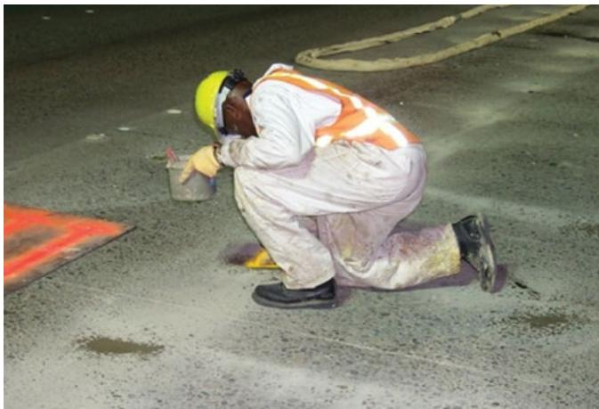
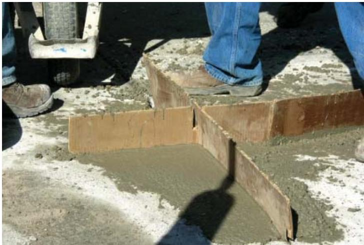

Polymer-Based Repair Materials
Polymer‑based repair materials are a two‑component composite created by blending a polymer resin—such as urethane, epoxy, or polyester—with an initiator and fine aggregate to form a rapid‑setting matrix that bonds directly to existing concrete [3]. Their chief purpose is to provide an early‑strength repair layer that restores structural continuity and surface performance while enabling traffic reopening within hours, owing to an exceptionally fast cure (about ninety seconds) and, in many formulations, moisture tolerance that allows placement on wet substrates [5]. The incorporated aggregate improves thermal compatibility, supplies a wear surface, and reduces cost, while the polymer matrix delivers high flexibility and strong adhesion; because the elastic modulus and coefficient of thermal expansion are temperature‑sensitive, matching the repair’s CTE to that of the host concrete is essential to prevent shrinkage‑induced debonding [2][3].
Sources (5)
Material purpose and applicability
Polymer‑based repair materials are a class of concrete formed by combining a polymer resin—such as urethane, epoxy, or polyester—with an initiator and fine aggregate to create a two‑component system. Polymer‑based repair materials, such as polyurethane concrete, are composed of a two‑part polyurethane resin blended with aggregate. In the pavement system they serve as an early‑strength repair layer that restores structural continuity and surface performance; the resin provides rapid setting and strong adhesion to the existing concrete, while the aggregate supplies a wear surface and thermal compatibility. They set extremely quickly—about ninety seconds—and many formulations are moisture tolerant, allowing placement on wet substrates without adverse effects. This rapid setting enables fast partial‑depth repairs that restore pavement continuity while minimizing traffic disruption. Their quick‑setting and flexible nature allows them to be placed across joints and cracks without having to reestablish the joint, enabling traffic service to be returned in hours. [3][5]
[3] — Ch. 5 (pp. 102–104); [5] — Ch. 5 (p. 95)
Composition and characteristics
Polyurethane repair materials generally consist of a two-part polyurethane resin mixed with aggregate, and polymer‑based repair materials are formed by combining polymer resin (such as urethane, epoxy, or polyester‑styrene) with an initiator and fine aggregate. Aggregate is added to the resin to make the polymer concrete more thermally compatible with the concrete (large differences in the coefficient of thermal expansion [CTE] can cause debonding), to provide a wearing surface, and to make the mixture more economical. The dual‑component system reacts to create a polymer matrix that incorporates the aggregate, providing structural integrity and strong bonding to existing pavement. Polyurethanes are generally very quick setting (90 seconds) – “very quick sett ing (90 seconds)” – which enables swift repairs, while the main advantage of polymers is that they set much more quickly than most cementitious materials. Some polyurethanes claim to be moisture‑tolerant; that is, they can be placed on a wet substrate with no adverse effects – “moisture-tolerant; that is, they can be placed on a wet substrate” and “Some polyurethanes claim to be moisture‑tolerant; that is, they can be placed on a wet substrate with no adverse effects.” Certain formulations are very sensitive to temperature changes, causing the elastic modulus to vary significantly with ambient temperature, and their coefficient of thermal expansion must be compatible with the substrate to avoid debonding. Resin type influences shrinkage and flexibility: polyurethane may exhibit higher CTE and initial shrinkage, whereas polyester shows low shrinkage and greater flexibility. [2][3][5]
The following figure illustrates a practical application of these materials by showing the injection of polyurethane for slab stabilization.

Worker applying polyurethane injection for slab stabilization. [3]A worker in protective gear is kneeling on a concrete surface, using a small container to apply material near the edge of a pavement slab.
[2] — Polyurethane Concrete (p. 42); [3] — Ch. 5 (pp. 103–104); [5] — Ch. 5 (p. 95)
Polymer‑based repair materials derive their performance from the specific resin selected and how it is proportioned with aggregate and initiator. Changing the polymer family (e.g., polyester, epoxy, polyurethane) or adjusting the aggregate content can alter setting time, temperature tolerance, elastic modulus, coefficient of thermal expansion, shrinkage, and moisture sensitivity; for example, polyurethanes set quickly and are flexible but have a high CTE and notable initial shrinkage, while epoxies show a wide range of strengths and bonding conditions that depend on the mix design. Because some polymers are highly temperature‑sensitive, variations in ambient or processing temperature can cause significant changes in elastic modulus, although proper removal of unsound concrete generally prevents bond loss. Consequently, manufacturers’ recommended proportions and placement depths must be followed to achieve the intended durability and avoid issues such as delamination when later overlaid. [3]
[3] — Ch. 5 (pp. 103–104)
Key material properties
Performance of polymer‑based repair materials hinges on several key properties. Physically, a rapid cure is essential; the guides describe a “very quick setting (90 seconds)” and note that “The main advantage of polymers is that they set much more quickly than most of the cementitious materials.” Chemically, the two‑part polyurethane resin mixed with aggregate provides the base system, and moisture tolerance—“moisture‑tolerant; that is, they can be placed on a wet substrate with no adverse effects”—allows application over damp surfaces without loss of bond strength. Mechanically, high flexibility is advantageous; “Polyurethanes are generally very quick setting and are very flexible.” Sufficient elasticity helps bridge joints and cracks, but the elastic modulus may be temperature‑sensitive—“Some polymer‑based repair materials are very sensitive to temperature changes, and consequently their elastic modulus can vary significantly depending on ambient temperature conditions.”—and initial shrinkage can be significant. Thermally, compatibility of coefficient of thermal expansion (CTE) with existing concrete is critical; “Differences in the CTE values between the repair material and the existing concrete may lead to failures of the repair due to stresses resulting from the thermal expansion of the epoxy material,” while some polymer types remain usable over a broad temperature range (“approximately 40 °F to 130 °F”). Together, these physical, chemical, mechanical, and thermal attributes determine durability and suitability of polymer‑based repairs. [2][3][5]
[2] — Polyurethane Concrete (p. 42); [3] — Ch. 5 (pp. 103–104); [5] — Ch. 5 (p. 95)
Polymer‑based repair materials are characterized through a set of measurable performance traits. Setting speed is quantified as the elapsed time to achieve full cure, which is typically reported as about ninety seconds (quick sett ing (90 seconds); very quick setting (90 seconds)). Moisture tolerance is evaluated by applying the mix to a wet substrate and confirming that bond strength and durability are not compromised; materials meeting this criterion are classified as moisture‑tolerant (moisture-tolerant; that is, they can be placed on a wet substrate). Mechanical response is characterized through laboratory tests of elastic modulus, which “can vary significantly depending on ambient temperature conditions,” and by measuring the coefficient of thermal expansion to compare with the existing pavement—“Differences in the CTE values between the repair material and the existing concrete may lead to failures…”. Post‑cure dimensional behavior is assessed for shrinkage or flexibility, noting that “These more flexible repair materials generally do not crack.” Bond performance is further characterized by strength and adhesive capability tests to ensure adequate bonding (Strength and adhesive capability are also assessed to ensure adequate bonding). Across the guides, the formulation is consistently described as a two‑part polyurethane resin mixed with aggregate (two-part polyurethane resin mixed with aggregate; Polyurethane-based repair materials generally consist of a two-part polyurethane resin mixed with aggregate), providing the basis for these property evaluations. [2][3][5]
[2] — Polyurethane Concrete (p. 42); [3] — Ch. 5 (pp. 103–104); [5] — Ch. 5 (p. 95)
Behavior and mechanisms
The guides describe polymer‑based repair materials as quick‑setting composites that bond well to existing concrete. Polyurethane formulations set extremely fast—about ninety seconds—and are noted for rapid hardening, while other polymer mixes also cure quickly. Their behavior under service conditions is governed by the type of polymer. Flexible polyurethane systems exhibit high flexibility and generally do not crack under load, allowing placement across joints without re‑establishing the joint; however, they possess a high coefficient of thermal expansion, show initial shrinkage, and many types are intolerant of moisture. In contrast, some polyurethane formulations are described as moisture‑tolerant and can be applied to a wet substrate without detrimental effects. Epoxy‑based systems are characterized as impermeable with excellent adhesive properties, but they require compatibility of coefficient of thermal expansion with the substrate to avoid thermal‑stress cracking. Temperature changes affect the elastic modulus of polymer‑based repairs; the guides note that the modulus can vary significantly with ambient temperature, although this does not normally impair bond when unsound concrete is removed before placement. Differential expansion or moisture sensitivity in overlay applications may lead to delamination. The sources do not provide information on performance under chemical exposure or other long‑term service conditions. [3][5]
[3] — Ch. 5 (pp. 103–104); [5] — Ch. 5 (p. 95)
The behavior of polymer‑based repair materials is controlled by intertwined chemical, physical, and mechanical mechanisms. Chemically, the systems are built from a two-part polyurethane resin combined with an initiator; the rapid cure that occurs when the resin reacts—often within about quick setting (90 seconds)—sets the matrix and determines ultimate strength. Physically, the cured polymer exhibits temperature‑dependent elasticity and a coefficient of thermal expansion (CTE) that is typically higher than that of concrete; ambient temperature changes can cause significant variations in elastic modulus and generate thermal stresses that may debond the repair if CTE mismatch is large (Some polymer-based repair materials are very sensitive to temperature changes, and consequently their elastic modulus can vary significantly depending on ambient temperature conditions., Differences in the CTE values between the repair material and the existing concrete may lead to failures of the repair due to stresses resulting from the thermal expansion of the epoxy material.). The resin‑aggregate mix also introduces shrinkage during cure; high CTE contributes to initial shrinkage (Polyurethanes are generally very quick setting and are very flexible. They also often exhibit, however, a high CTE and significant initial shrinkage, and many types are intolerant of moisture.). Mechanically, the inclusion of aggregate provides load‑bearing capacity and stiffness, while the polymer matrix imparts flexibility or rigidity depending on formulation; this interaction governs adhesion, crack resistance, and durability (Polymer-based concretes are formed by combining polymer resin (molecules of a single family or several similar families linked into molecular chains), aggregate, and an initiator.). Moisture tolerance is another chemical‑physical attribute of certain formulations, allowing placement on wet substrates without adverse effects (moisture-tolerant). Together, these mechanisms—rapid polymerization chemistry, thermal‑expansion behavior, shrinkage, moisture sensitivity, and aggregate‑driven mechanical strength—govern the performance of polymer‑based repair materials. [3][5]
[3] — Ch. 5 (pp. 103–104); [5] — Ch. 5 (p. 95)
Durability and deterioration
Polymer‑based repair concretes are vulnerable to durability concerns primarily linked to thermal and moisture effects. Their elastic modulus can shift markedly with ambient temperature, and the high coefficient of thermal expansion often creates differential stresses that can lead to cracking or delamination, especially when a thin overlay is later placed. Additionally, many formulations show significant initial shrinkage and are intolerant of moisture, increasing the risk of bond loss if placement conditions are not carefully managed. [3]
[3] — Ch. 5 (pp. 103–104)
Polymer‑based repair materials become more prone to deterioration when they exhibit mismatched thermal properties or are exposed to adverse moisture and temperature conditions. “Some polymer-based repair materials are very sensitive to temperature changes, and consequently their elastic modulus can vary significantly depending on ambient temperature conditions.” Likewise, “Differences in the CTE values between the repair material and the existing concrete may lead to failures of the repair due to stresses resulting from the thermal expansion of the epoxy material.” Certain polyurethane systems also present intrinsic challenges: “Polyurethanes … often exhibit, however, a high CTE and significant initial shrinkage, and many types are intolerant of moisture.” In addition, thin overlay placements can exacerbate failure mechanisms: “It should be noted that the placement of thin overlays (with either asphalt or concrete) over areas repaired using polymer-based repair materials may cause delamination issues.”
Conversely, susceptibility is reduced by selecting compatible formulations and employing construction practices that mitigate exposure stresses. Using products whose CTE aligns with the substrate, removing all unsound concrete before placement, and opting for materials that perform over a broad temperature range (e.g., polyester concretes) lower thermal‑induced stress. Moisture‑tolerant polyurethane options further improve durability: “Some polyurethanes claim to be moisture-tolerant; that is, they can be placed on a wet substrate with no adverse effects.” The inherently rapid set time of these systems also limits the window of vulnerability: “Polyurethanes are generally very quick setting (90 seconds).” Avoiding thin overlays over repaired sections further reduces the risk of delamination. [3][5]
[3] — Ch. 5 (pp. 103–104); [5] — Ch. 5 (p. 95)
Material interactions and compatibility
The polymer‑based repair materials are supplied as a two‑part polyurethane resin that is blended directly with the selected aggregate, creating a physical rather than chemical bond between matrix and particles. This formulation produces an extremely rapid set—on the order of seconds—which limits any prolonged reaction with surrounding cementitious material. Certain formulations are engineered to be moisture tolerant, allowing placement onto a wet substrate without loss of adhesion. Interaction with the existing concrete relies on proper surface preparation; removal of all unsound concrete is required before application so that the polymer can bond directly to the sound cement matrix. Because the resin and aggregate have their own coefficient of thermal expansion (CTE), aggregates are chosen to bring the composite CTE closer to that of the host concrete, preventing stress‑induced debonding that can arise from large CTE mismatches. [2][3][5]
[2] — Polyurethane Concrete (p. 42); [3] — Ch. 5 (pp. 103–104); [5] — Ch. 5 (p. 95)
Polymer‑based repair materials can be vulnerable to compatibility problems when the resin’s coefficient of thermal expansion (CTE) does not match that of the existing concrete, because CTE differences generate stresses that may cause failure, and polyurethane systems in particular show a high CTE together with significant initial shrinkage. Many polymer formulations are also moisture‑intolerant, so excess water or wet placement conditions can impair setting and bond quality. Finally, applying thin asphalt or concrete overlays over a polymer‑repaired area often leads to delamination, indicating that the repaired zone is not compatible with subsequent dissimilar surface layers. [3]
[3] — Ch. 5 (pp. 103–104)
Influence of production and placement
Polymer‑based repair mixes, such as polyurethane systems, are produced by blending a two‑part resin with aggregate. Because the chemistry sets in roughly ninety seconds, the material must be placed promptly and compacted within that window to develop full strength. Moisture‑tolerant formulations allow placement on a wet substrate without adverse effects; some products explicitly market this capability. Prior to placement, all unsound concrete must be removed, and for deeper repairs the guides recommend building the repair in multiple lifts to limit heat buildup during cure. Temperature control is critical: many polymer mixes exhibit significant changes in elastic modulus with ambient temperature, so maintaining the recommended range and respecting thermal‑expansion compatibility helps prevent bond failures or stress cracking. [2][3][5]
The following figure illustrates the concrete placement process for a Type 1 repair using waxed cardboard.

Concrete placement for Type 1 repair using waxed cardboard [2]The image shows a worker placing wet concrete into a square area defined by temporary wooden formwork on an existing surface.
[2] — Polyurethane Concrete (p. 42); [3] — Ch. 5 (pp. 103–104); [5] — Ch. 5 (p. 95)
The most critical construction‑related factors that govern the long‑term performance of polymer‑based repairs are proper substrate preparation and thermal compatibility. If any unsound concrete remains, the bond can deteriorate despite the material’s temperature‑sensitive modulus; likewise, a mismatch between the repair’s coefficient of thermal expansion and that of the existing pavement generates stresses that can cause cracking or delamination, especially for epoxy and polyurethane systems that have high CTE and initial shrinkage. Moisture intolerance of many polyurethanes further compromises durability when placement occurs in wet conditions, and oversized or deep repairs—particularly those later covered by thin overlays—are prone to delamination. Consequently, careful removal of deteriorated concrete, control of repair size, avoidance of moisture during placement, and consideration of future overlay plans are essential to preserve the material’s longevity. [3]
The following figure illustrates full-depth repair recommendations for continuously reinforced concrete pavement that align with these critical preparation and compatibility requirements.
 Full-depth repair recommendations for a Continuously Reinforced Concrete Pavement (CRCP). [3]
Full-depth repair recommendations for a Continuously Reinforced Concrete Pavement (CRCP). [3]
The figure illustrates the geometric layout of full-depth repairs on a CRCP, specifying that cracks should be replaced as a single area with dimensions defined by parameters ‘a’ and ‘b’. It indicates that for multiple-lane considerations involving wide cracks or ruptured steel, special repair protocols are necessary to prevent blowups in adjacent lanes. The diagram visually demonstrates how polymer-based repair materials are applied to restore structural continuity and surface performance by filling these specific distress areas.
[3] — Ch. 5 (pp. 103–104)
Selection, specification, and improvement
Selection of polymer‑based repair materials is guided by a set of performance and compatibility criteria that span composition, setting speed, environmental tolerance, dimensional stability, temperature range, intended future use, and strict adherence to manufacturer specifications. The guides note that the typical system consists of a two‑part polyurethane resin combined with aggregate, a formulation prized for its very quick setting—about ninety seconds—and its moisture‑tolerant nature, allowing placement on wet substrates. A primary consideration is rapid‑setting capability; as one source states, “When choosing a polymer‑based repair material, the primary consideration is its rapid‑setting capability, which enables the pavement to be reopened to traffic as soon as possible after repair.” This rapid cure also supports early traffic opening, a recurring advantage highlighted across the sources. Compatibility of the resin’s coefficient of thermal expansion (CTE) with that of the existing concrete must be verified to avoid stress‑induced cracking: “ensure the resin’s thermal expansion matches that of the existing concrete.” The material must perform within the ambient temperature conditions expected on site; polyester concretes, for example, are valued for placement over a broad surface‑temperature window (approximately 40 °F to 130 °F). Future pavement use influences selection—polymer repairs are generally discouraged where a thin overlay is planned and manufacturers’ depth‑and‑size limits should be observed to prevent premature failure. Finally, the guides stress that “Equally important is strict compliance with the manufacturer’s instructions and specifications, because performance depends on following the prescribed mixing, placement, and curing procedures.” [2][3][5]
[2] — Polyurethane Concrete (p. 42); [3] — Ch. 5 (pp. 103–104), Ch. 8 (p. 191); [5] — Ch. 5 (p. 95)
The guides advise that polymer‑based repairs are based on a two‑part polyurethane resin mixed with aggregate, which yields an extremely rapid set time of about ninety seconds. Selecting moisture‑tolerant blends allows placement on wet substrates without loss of bond strength. Proper quality control includes maintaining the correct resin‑to‑aggregate ratio to achieve the uniform quick setting. Adding suitably graded aggregate improves thermal compatibility by reducing coefficient of thermal expansion mismatches, thereby preventing debonding. Thorough removal of all unsound concrete before placement is required for a reliable bond. Limiting repair depth and overall size in accordance with manufacturer limits helps control shrinkage stresses and temperature‑induced modulus changes. When future overlays are anticipated, the guides suggest considering alternative rapid‑setting cements such as calcium sulfoaluminate (CSA), which provide low shrinkage, high sulfate resistance, and rapid strength gain. [2][3][5]
The following figure illustrates the proper placement of grout at the edge of a partial-depth repair.
 Placement of grout at edge of partial-depth repair [2]
Placement of grout at edge of partial-depth repair [2]
The figure shows workers using hand tools to place and smooth a material into the prepared edges of a concrete surface.
[2] — Polyurethane Concrete (p. 42); [3] — Ch. 5 (pp. 103–104); [5] — Ch. 5 (p. 95)
Performance evaluation and implications
The guides indicate that performance evaluation of polymer‑based repair materials draws on three complementary sources. Laboratory evidence comes from “controlled laboratory tests as well as on‑site field trials to gauge strength development, durability, and service life,” documented in recent investigations (e.g., Burnham et al. 2016; Ram et al. 2019; Falls 2019; Ramsey et al. 2020). Field evidence is provided by the accumulated experience of applying these materials in pavement distress repairs, which have been “used for several years with variable results,” offering real‑world proof of durability and effectiveness. Long‑term performance insight is inferred from this multi‑year field application, even though specific long‑term monitoring protocols are not detailed in the excerpts. [2][3]
[2] — Polyurethane Concrete (p. 42); [3] — Ch. 5 (pp. 102–103)
The guides note that “Polyurethane repair materials are formulated as a two‑part resin combined with aggregate, which gives them an exceptionally rapid cure—about ninety seconds—allowing pavement cracks and joints to be sealed almost immediately after placement.” This rapid cure, together with the statement that “Polymer‑based repair materials accelerate construction because they set much more quickly than most of the cementitious materials, enabling traffic to be opened in just a few hours after placement,” shortens construction schedules and reduces traffic disruption. Moisture tolerance is highlighted by “Their ability to tolerate moisture means they can be applied over damp substrates without compromising the bond, expanding their use in wet conditions and reducing the need for extensive surface drying before repair.” However, performance variability is reported: “long‑term performance has been reported as variable, indicating that durability depends on specific product formulations and site conditions,” and “the variable performance reported in practice indicates that long‑term durability may still depend on site-specific factors and proper application techniques.” Temperature sensitivity influences structural behavior, as expressed by “Some polymer-based repair materials are very sensitive to temperature changes, and consequently their elastic modulus can vary significantly depending on ambient temperature conditions.” Compatibility of thermal expansion is also critical: “Differences in the CTE values between the repair material and the existing concrete may lead… failures of the repair due to stresses resulting from the thermal expansion of the epoxy material.” Finally, successful application hinges on workmanship: “It is critical that all manufacturer’s instructions be followed when working with these proprietary materials (ACPA 2006).” [2][3][5]
[2] — Polyurethane Concrete (p. 42); [3] — Ch. 5 (pp. 103–104), Ch. 8 (p. 191); [5] — Ch. 5 (p. 95)
References
- PDR_guide_Apr2012 ·
PDR_guide_Apr2012 - Concrete Pavement Preservation Guide (Third Edition) ·
concrete_pvmt_preservation_guide_3rd_edition_web - Concrete Pavement Preservation Workshop ·
preservation_reference_manual